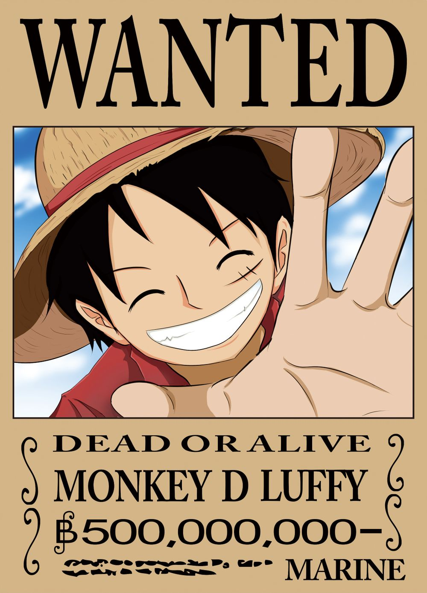

《人物简介》路飞

基本资料
路飞 —— Monkey D Luffy
年龄：16岁
生日：4月22日（世界地球日）
星座：金牛座
出生：东海-风车
血型：A型
身高：170cm
所属：草帽海贼团-船长
职称：船长
能力：超人系拥有“橡胶果实”能力的橡胶人
特征 ：戴草帽，左眼下方有一道疤痕。
悬赏金：3000万贝里(可可亚西村事件)→1亿贝里(阿拉巴斯坦事件)→3亿贝里(司法岛事件)→4亿贝利（海军本部马琳福德事件）
恶魔果实：超人系——橡胶果实
弱点：怕刀、海楼石、怕烫、不能游泳(恶魔果实能力者共通弱点)
喜欢的食物：肉
代表动物：猿猴
惧怕的类型：爷爷
身上的味道：肉的味道（根据乔巴的鼻子判断）
代表颜色：红色
代表数字：01、56（56日文和橡胶同音）
梦想：成为海贼王得到上个海贼王葛鲁多·D·罗杰的密宝——One Piece、跟红发再度见面
身世
在东海某个海岛的风车村长大，和暂驻在渔村的大海贼红发香客斯感情很好，于是一心想成为海贼。眼下的疤痕就是为了显示自己够狠自己用刀划的。可是路飞7岁时糊里糊涂的吃了海贼们抢来的恶魔果实——橡皮果实（ゴムゴムの実），从此再也不会游泳了。这样还能成为海贼吗？路飞的答案是——只要不掉到海里就可以了。
有一次，为了捍卫海盗的名誉，路飞和山贼顶上了，差点丧命，还好海贼们及时赶到。但是路飞被山贼头子扔到了海里，香客斯为了救他被凶猛的海兽咬掉了左臂。
红发香客斯离开渔村再次出海前，把自己的草帽戴在了路飞头上。“将来你一定要还给我，当你成为出色海盗的时候！”
十年后，路飞真的出海了。他的目标是——海贼王！而那顶草帽，也成了路飞最珍爱的宝物。
性格
草帽海贼团船长。草帽海贼团三主力之一，是吃橡胶果实能力者。橡胶人，身体具有绝佳的弹性与延展性，可以抵挡绝大多数的物理攻击，对雷电攻击具绝缘性。特征是头戴草帽，天性热情、善良，善恶分明，有时候脑子里会少一根筋，作出一些傻里傻气的事情，但在关键时刻是一个非常靠得住的人，并表现出超出常人的冷静和机智，属于那种遇强则强的类型。草帽海贼团全员都非常信任他，且他身上有种很容易就让人把他当作伙伴的魅力。对任何危险事物都超感兴趣，骗人布说“他得了准备好要冒险的病”。漫画中其角色设定为16岁， 170cm高，食量非常大，一天以5餐来计算，并极度爱吃肉。出生日为4月22日（世界地球日），金牛座。其口头禅为：“我是要成为海贼王的男人！”